01
Drawer revealTrail Edge
Pocket Knife
A slide-out drawer with a ribbon pull tab. The insert is layered cardboard, laser-engraved, so the knife sits in its own cut-out.
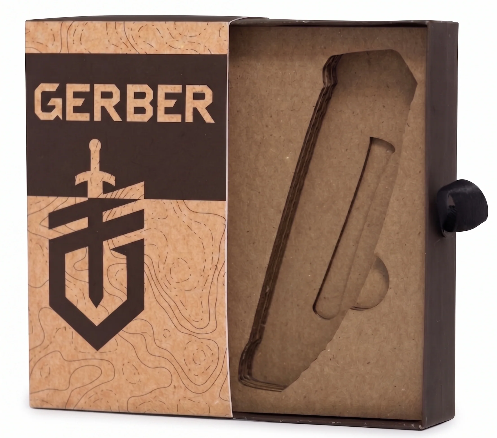
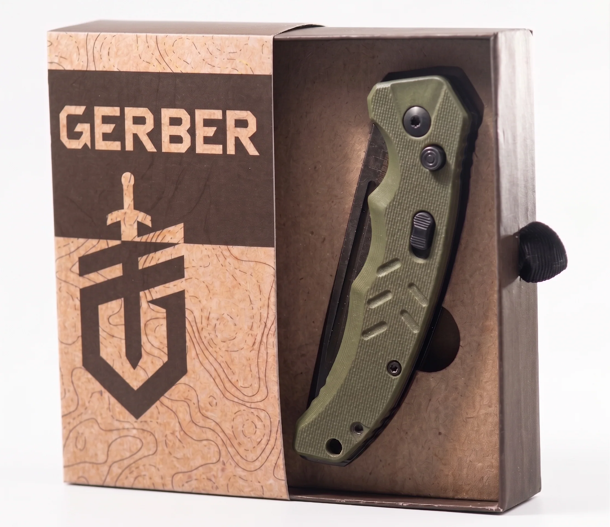

Structural packaging · Prototyping · Retail display
Packaging for three Gerber field tools, a knife, a hatchet and a paracord spool, made to sell on their own and bundle as one set.
Outdoor gear usually ships in plastic clamshells that can’t be recycled and hide what the tool feels like.
Cardboard for the display and unboxing, thick paper stock for the packages. Every piece was a working prototype.
A school project. I’m not affiliated with Gerber: the tools, hatchet and sheath included, are theirs. The packaging is mine.
A slide-out drawer with a ribbon pull tab. The insert is layered cardboard, laser-engraved, so the knife sits in its own cut-out.


Paper glued back to back, with zip ties hidden between the layers to hold it onto the hatchet. The hatchet and sheath are Gerber’s.
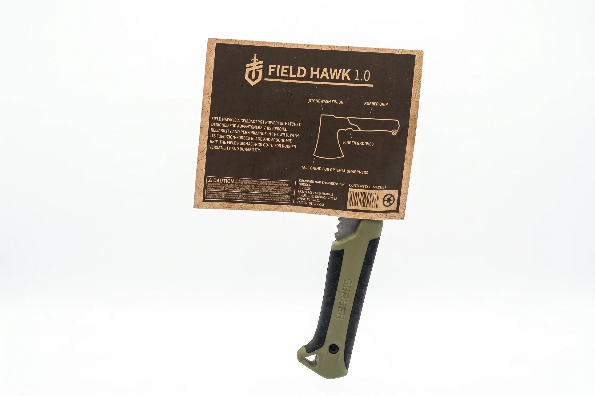
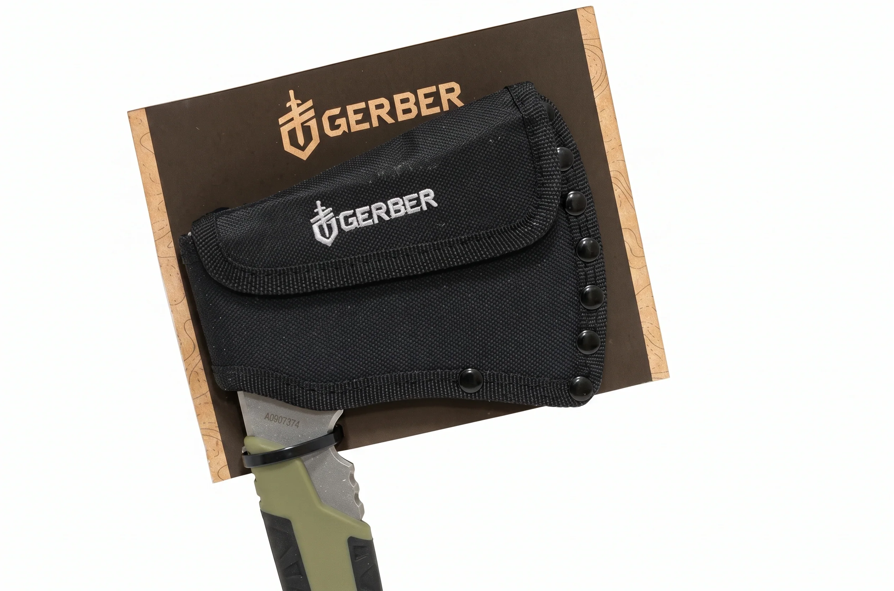
A wraparound sleeve that locks around a 550 cord spool and leaves the cord exposed, so you can feel it on the shelf.
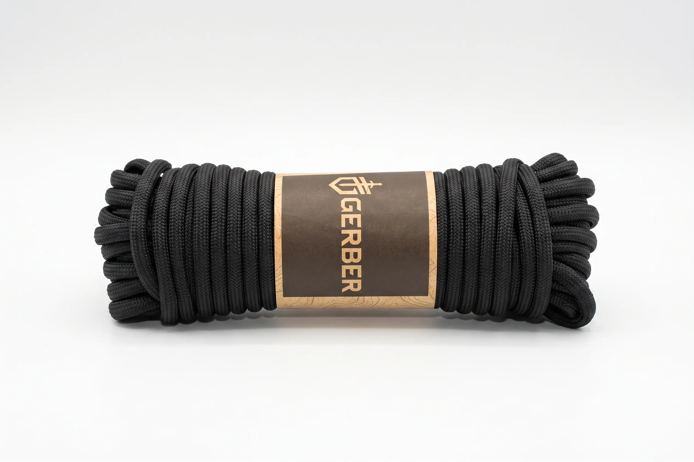
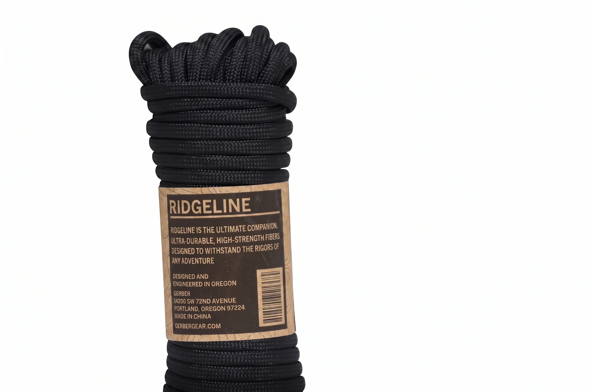
The dielines for all three, flat before anything is folded or glued.
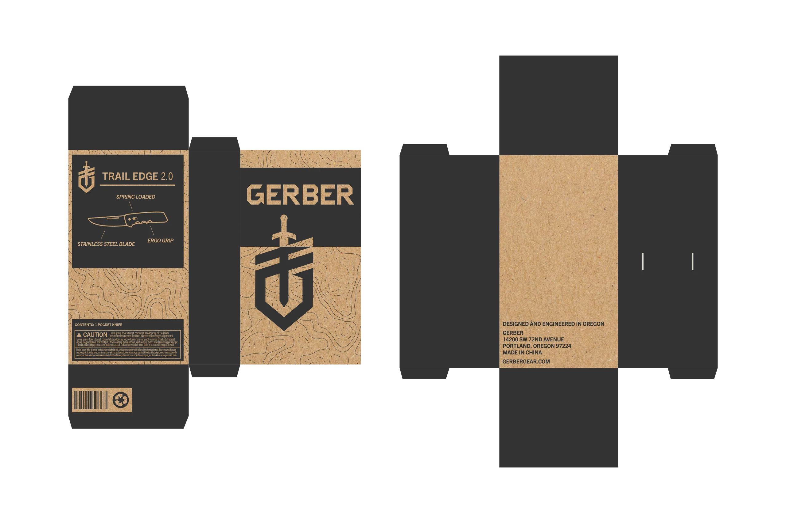
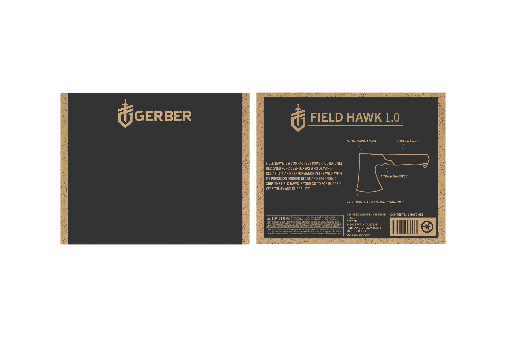
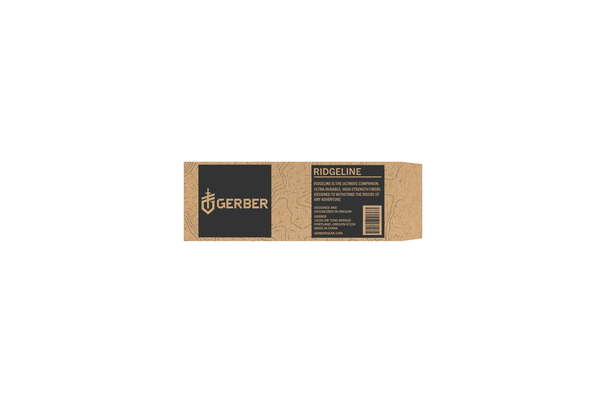
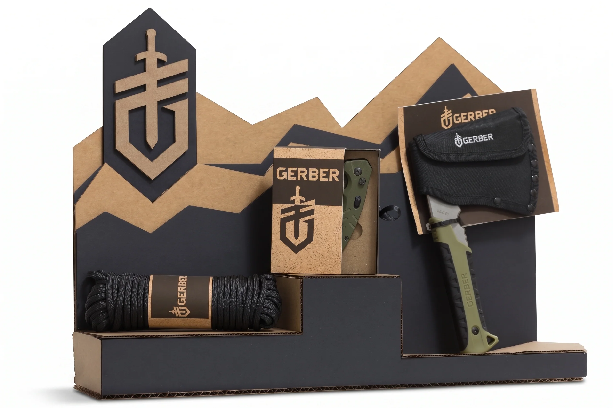
A cardboard counter unit that holds all three tools, with tiered shelves so every package stays visible and easy to pick up.
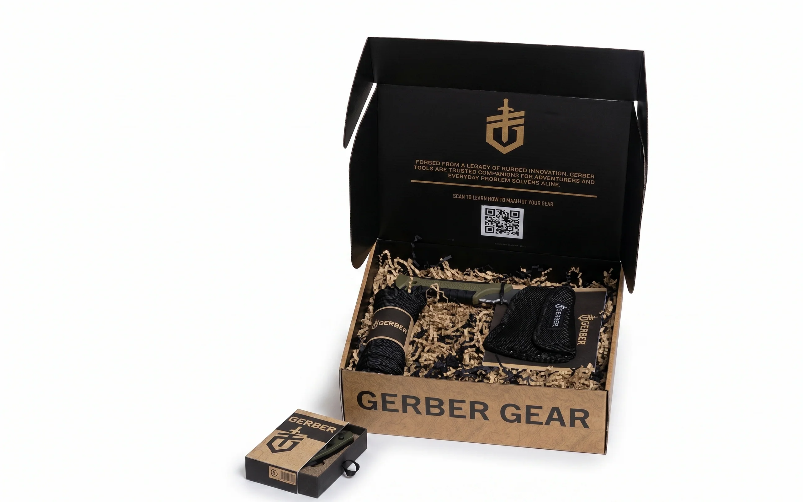
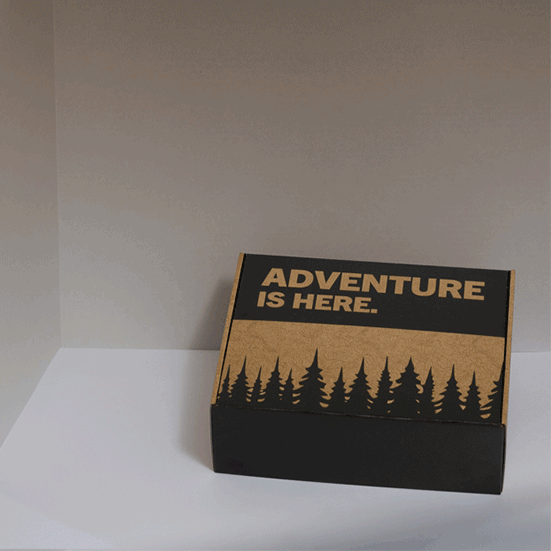
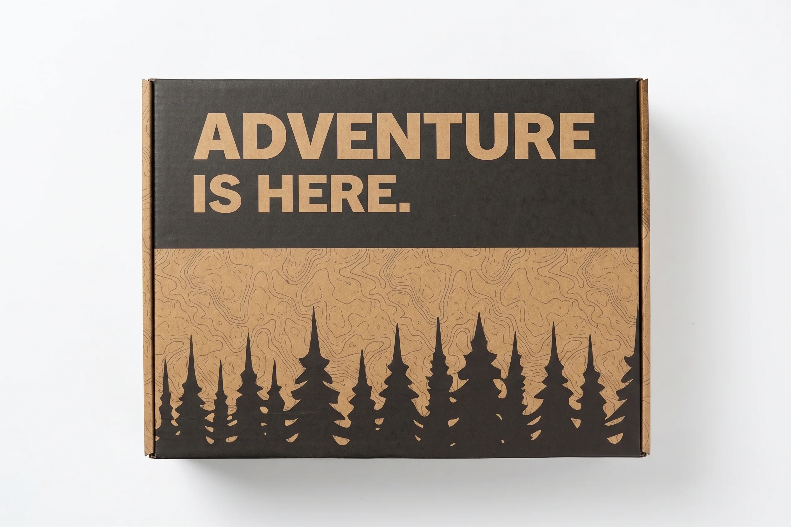
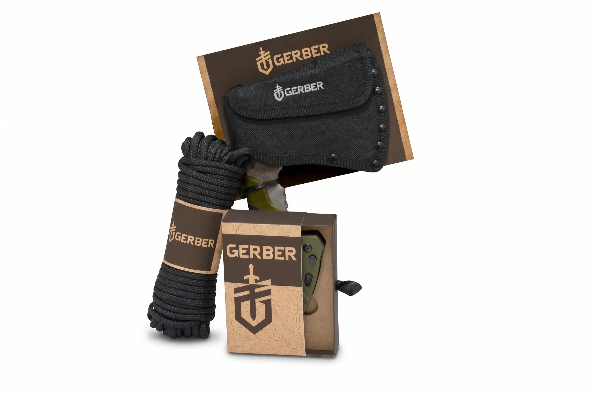

Rexburg Rapids